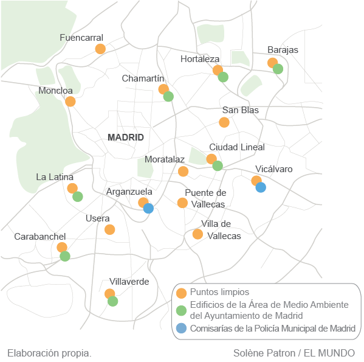

ENCUENTRA TU PUNTO DE RECICLAJE MÁS CERCANO
En GestionaVerde, hacemos que el reciclaje sea más accesible para todos. Este mapa muestra la ubicación de puntos limpios, edificios municipales dedicados al medio ambiente y comisarías que colaboran con la gestión de residuos en Madrid.
¿Por qué reciclar? Reciclar no solo ayuda a reducir la contaminación y a ahorrar recursos, sino que también mejora nuestra calidad de vida. Al conocer los puntos de reciclaje más cercanos, puedes hacer tu contribución de manera más sencilla y efectiva. ¡Sé parte del cambio!Encuentra tu punto más cercano, participa en nuestras actividades comunitarias y contribuye al desarrollo de un futuro más sostenible.RECICLAJE MÁS CERCA DE TI
En GestionaVerde, creemos que cada pequeño gesto cuenta. Este mapa destaca la ubicación de los puntos de reciclaje para residuos textiles (verde) y aceite vegetal usado (azul)en tu comunidad. Identificar estos puntos te ayudará a contribuir de manera práctica al cuidado del medio ambiente.
¿Qué puedes reciclar aquí?